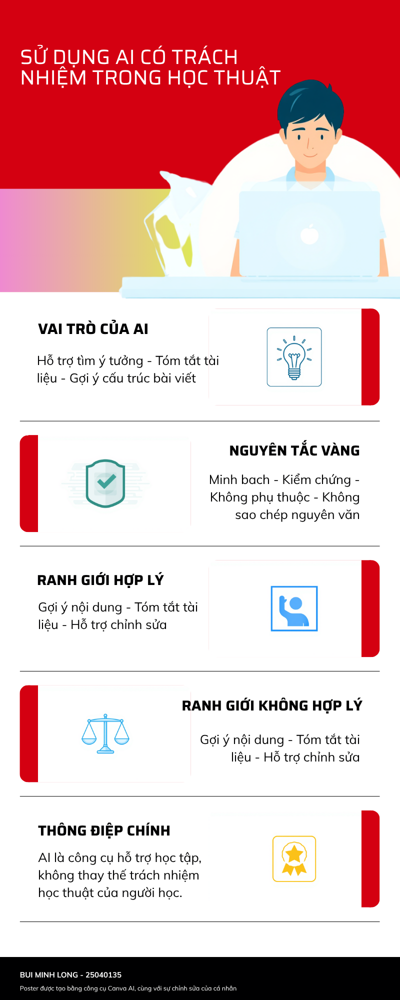

NV6 - Sử dụng AI trong tổng hợp nghiên cứu ESL
Thời gian đăng tải: 2026-06-16
Thông tin bài tập
Mô tả
Nghiên cứu cách sử dụng AI trong quá trình tổng hợp thông tin học thuật (synthesis) từ các bài báo ESL (English as a Second Language), kết hợp nhiều công cụ AI như Perplexity, NotebookLM và ChatGPT để hỗ trợ tìm kiếm, lọc, phân tích và viết học thuật.
Mục tiêu
- Xác định và tổng hợp các chủ đề nghiên cứu ESL.
- Rèn luyện kỹ năng synthesis học thuật thay vì tóm tắt đơn lẻ.
- Đánh giá vai trò của AI trong toàn bộ quy trình nghiên cứu.
- Phát triển tư duy phản biện trong sử dụng AI.
Công cụ sử dụng
I. Quá trình sử dụng AI
1.1. Tìm tài liệu học thuật (Perplexity AI)
Find peer-reviewed academic papers only on ESL focusing on: - teaching methodologies (CLT, TBLT) - learner autonomy - technology in language learning Requirements: - 2018–2025 - Scopus / ERIC / Springer / Elsevier - include DOI + relevance explanation
Based on the search results, here are relevant peer-reviewed papers meeting most of your criteria: ------------------------------ 1. Teaching Methodologies (CLT/TBLT) Paper: Akdağ-Çimen, T., & Çeşme, H. (2022). "Effect of TPR and CLT on young EFL learners' speaking anxiety, oral proficiency, and vocabulary learning." Electronic Journal of Foreign Language Teaching, 19(2) DOI: 10.56040/akce1924 Relevance: Empirical study testing CLT effectiveness on speaking anxiety, oral proficiency, and vocabulary – directly addresses CLT methodology Paper: Systematic Literature Review of Task-Based Language Teaching (2025) DOI: Not provided in snippet Relevance: Critically analyzes TBLT effectiveness across L2 environments; searched in Scopus & ERIC ------------------------------ 2. Learner Autonomy Paper: Dimensions of English language learner autonomy assessment (2026) DOI: Not provided Relevance: PRISMA systematic review of 30 studies (1996–2025); emphasizes metacognitive, motivation, cognitive, and social dimensions in 2018–2025 period Paper: A Review on Learner Autonomy with Mobile-Assisted Language Learning (2023) DOI: Not provided in snippet Relevance: Reviews 12 articles (2018–2023) on mobile apps developing learner autonomy for tertiary EFL learners ------------------------------ 3. Technology in Language Learning Paper: Technology in Language Teaching & Learning (ChatGPT study) DOI: Not provided Relevance: Shows ChatGPT enhanced ESP writing performance + implicit learner autonomy growth Paper: Technology's Influence on English language learning (2025) DOI: 10.54660/IJSSER.2025.4.3.151-156 Relevance: 2025 paper on technology transforming English language learning practices
1.2. Lọc bài qua abstract (Perplexity AI)
Score each abstract 0–5 based on relevance to ESL teaching, methodology depth, and technology/learner autonomy connection. Classify: KEEP / MAYBE / REMOVE. Output in table format.
Akdağ-Çimen & Çeşme (2022). TPR vs CLT on young EFL learners - Relevance Score: 4.5 - Classification: KEEP - Reasoning: High relevance because it directly compares CLT methodology. It measures key ESL outcomes such as speaking anxiety, oral proficiency, and vocabulary. The study also has strong methodological depth with an experimental design. Systematic Literature Review of Task-Based Language Teaching (2025) - Relevance Score: 3.5 - Classification: MAYBE - Reasoning: Moderately high relevance since it focuses on TBLT, which is an important ESL methodology. However, it is a review study rather than original empirical research, so its methodological contribution is limited to synthesis. Dimensions of English language learner autonomy assessment (2026) - Relevance Score: 3.0 - Classification: MAYBE - Reasoning: Moderately relevant because it addresses learner autonomy, which matches the topic area. However, it is a systematic review covering multiple decades and is not ESL-specific empirical research. It focuses on assessment rather than teaching methods. A Review on Learner Autonomy with Mobile-Assisted Language Learning (2023) - Relevance Score: 4.0 - Classification: KEEP - Reasoning: High relevance due to the clear link between learner autonomy and mobile-assisted language learning. It synthesizes studies within the 2018–2025 range and targets tertiary EFL contexts, connecting both autonomy and technology. Technology in Language Teaching & Learning (ChatGPT/ESP study) - Relevance Score: 4.2 - Classification: KEEP - Reasoning: Highly relevant because it examines ChatGPT in language learning and shows links to learner autonomy development. It also involves ESP contexts, which fall under ESL-related domains, and provides empirical findings on writing performance. Technology's Influence on English language learning (2025) - Relevance Score: 2.5 - Classification: REMOVE - Reasoning: Lower relevance due to being a general overview-style article. It lacks methodological depth and does not clearly connect to learner autonomy. It also appears to be from a less rigorous publication source. --------------------------------- Summary KEEP: 3 papers (Akdağ-Çimen & Çeşme 2022; MALL Review 2023; ChatGPT Study) MAYBE: 2 papers (TBLT Review 2025; Autonomy Assessment 2026) REMOVE: 1 paper (Technology Influence 2025) Overall conclusion: The KEEP papers best align with the criteria due to stronger empirical grounding, clearer ESL relevance, and explicit links between technology, autonomy, and learning outcomes.
1.3. Tóm tắt bài báo (NotebookLM)
Summarize academic paper focusing on: - methodology - key findings - pedagogical implications - contribution to ESL synthesis themes
This quasi-experimental study involved 56 second-grade Turkish EFL learners to compare Total Physical Response (TPR) and Communicative Language Teaching (CLT). Data were gathered through pre- and post-tests assessing speaking anxiety, oral proficiency, and vocabulary Key findings indicate both methods significantly improved oral proficiency and vocabulary while reducing speaking anxiety .Remarkably, the TPR group showed higher overall improvements, particularly in vocabulary growth, despite the CLT group's higher initial scores Pedagogically, the study emphasizes reducing student anxiety as a priority for better learning outcomes. It suggests TPR is effective for more than just vocabulary, rivaling CLT in fostering speaking skills. This research contributes to ESL synthesis themes by providing a unique comparative analysis, challenging traditional views of TPR's limitations and supporting its versatility in young learner contexts
1.4. Lập bảng synthesis (ChatGPT / Gemini)
Build a synthesis matrix from multiple ESL papers: Theme | Consensus | Contradictions | Evidence | Implications Focus on relationships, not summaries.
Theme 1: Teaching methodology (CLT, TBLT, communicative approaches) - Điểm đồng thuận: Các nghiên cứu đều cho thấy phương pháp giảng dạy lấy người học làm trung tâm (CLT, TBLT, TPR) có xu hướng cải thiện năng lực giao tiếp, tăng mức độ tham gia của người học và hỗ trợ phát triển kỹ năng ngôn ngữ thực tế. - Điểm khác biệt: Một số nghiên cứu nhấn mạnh hiệu quả của phương pháp phụ thuộc vào độ tuổi, trình độ người học và bối cảnh triển khai; trong khi các nghiên cứu khác cho rằng bản thân phương pháp đã tạo ra sự khác biệt đáng kể. Ngoài ra, vẫn còn tranh luận giữa việc ưu tiên giao tiếp hay duy trì dạy ngữ pháp có cấu trúc. - Khoảng trống nghiên cứu: Chưa có nhiều nghiên cứu kết hợp trực tiếp giữa phương pháp giảng dạy và yếu tố công nghệ hoặc tự chủ học tập để đánh giá tác động tổng hợp lên kết quả ESL. Theme 2: Learner autonomy - Điểm đồng thuận: Các nghiên cứu thống nhất rằng tự chủ học tập có mối liên hệ tích cực với động lực học tập, mức độ tham gia và kết quả học ngôn ngữ dài hạn. Người học chủ động thường đạt hiệu quả cao hơn trong môi trường ESL/EFL. - Điểm khác biệt: Có sự khác biệt trong quan điểm về nguồn gốc của tự chủ học tập: một số nghiên cứu xem đây là năng lực có thể phát triển thông qua thiết kế giảng dạy, trong khi số khác xem đây là đặc điểm cá nhân của người học. Đồng thời, tiêu chí đo lường learner autonomy cũng chưa thống nhất. - Khoảng trống nghiên cứu: Thiếu bằng chứng thực nghiệm dài hạn về cách tự chủ học tập được hình thành và duy trì trong môi trường học tiếng Anh có ứng dụng công nghệ. Theme 3: Technology in ESL (MALL, AI, ChatGPT) - Điểm đồng thuận: Công nghệ hỗ trợ tăng khả năng tiếp cận tài nguyên, cá nhân hóa trải nghiệm học tập và thúc đẩy hành vi học tập độc lập. Các công cụ như mobile learning và AI được xem là có tiềm năng cải thiện hiệu suất học ngôn ngữ. - Điểm khác biệt: Các nghiên cứu chưa thống nhất về việc công nghệ thực sự phát triển năng lực học tập hay chỉ làm tăng hiệu quả hoàn thành nhiệm vụ. Một số nghiên cứu cảnh báo nguy cơ phụ thuộc công nghệ và giảm tư duy phản biện. - Khoảng trống nghiên cứu: Còn thiếu các nghiên cứu thực nghiệm đánh giá đồng thời tác động của AI, phương pháp giảng dạy và learner autonomy trong cùng một mô hình nghiên cứu ESL. Tổng hợp mối quan hệ giữa các chủ đề: - Teaching methodology cung cấp cấu trúc học tập. - Autonomy quyết định mức độ chủ động và duy trì học tập. - Technology đóng vai trò công cụ trung gian hỗ trợ hoặc khuếch đại hai yếu tố trên. Khoảng trống chung của lĩnh vực hiện nay là thiếu các nghiên cứu tích hợp cả ba biến (teaching methodology – learner autonomy – technology) để giải thích toàn diện kết quả học tập ESL.
1.5. Viết synthesis (ChatGPT / Gemini)
Write a 250–350 word academic synthesis. Must: - integrate multiple studies - show relationships, not summaries - include contradictions and gaps
In contemporary English as a Second Language (ESL) education, increasing attention has been directed toward identifying instructional approaches that not only improve language performance but also promote sustainable and independent learning. Across recent literature, ESL development is increasingly understood as the result of interactions among teaching methodology, learner autonomy, and technology-enhanced learning environments rather than the effect of isolated pedagogical interventions. Research consistently indicates that learner-centered methodologies, particularly communicative and task-based approaches, contribute positively to language development by increasing opportunities for authentic language use and active participation. These approaches appear to support improvements in speaking performance, vocabulary acquisition, and learner engagement. However, evidence also suggests that methodological effectiveness is context-dependent, varying according to learner characteristics, instructional design, and assessment priorities. As a result, no single teaching method demonstrates universal superiority across ESL contexts. Within this pedagogical shift, learner autonomy emerges as a central mechanism linking instructional practices to long-term language outcomes. Studies broadly associate autonomous learning behaviors with stronger motivation, sustained engagement, and greater ownership of learning processes. Nevertheless, contradictions remain regarding whether autonomy develops naturally through exposure to learner-centered environments or requires explicit instructional scaffolding. In addition, inconsistency in autonomy measurement continues to limit comparability across studies. Technology has increasingly been positioned as a mediating factor that extends opportunities for autonomous learning. Mobile-assisted learning and AI-supported tools provide greater flexibility, immediate feedback, and personalized learning pathways, potentially strengthening learner agency. At the same time, conflicting findings raise concerns that technology may encourage dependency, reduce critical engagement, or prioritize task completion over deeper language development. Overall, current evidence suggests that effective ESL learning is best conceptualized as an integrated process in which teaching methodology establishes learning conditions, learner autonomy drives engagement, and technology amplifies or constrains these interactions. Future research should move toward integrated models that examine the combined influence of these dimensions rather than treating them as independent variables.
II. Đánh giá và chỉnh sửa
Sau khi nhận đầu ra từ AI, người học thực hiện:
- Kiểm tra logic giữa các nhóm chủ đề
- Bổ sung thuật ngữ học thuật (academic integrity, adaptive learning...)
- Điều chỉnh quan hệ nguyên nhân – hệ quả
- Viết lại để tăng tính học thuật và mạch lạc
III. Phân tích đạo đức sử dụng AI
1. Ranh giới giữa hỗ trợ và gian lận: AI hỗ trợ tóm tắt, gợi ý cấu trúc và giải thích khái niệm, nhưng trở thành gian lận nếu người học nộp nguyên văn mà không hiểu nội dung.
2. Quyền sở hữu trí tuệ: AI không phải tác giả học thuật. Nội dung có thể không có nguồn trích dẫn rõ ràng, do đó cần minh bạch khi sử dụng.
3. Tác động đến kỹ năng: AI giúp tăng tốc xử lý thông tin nhưng có thể làm giảm kỹ năng viết độc lập nếu bị lạm dụng.
→ AI nên được xem là công cụ hỗ trợ tư duy, không thay thế tư duy.
IV. Bộ nguyên tắc sử dụng AI
- Luôn kiểm chứng thông tin từ AI
- Không dùng AI để thay thế tư duy cá nhân
- Minh bạch việc sử dụng AI
- Hiểu nội dung trước khi nộp bài
- Tôn trọng liêm chính học thuật
- Dùng AI cho ý tưởng và tổng hợp, không phải sản phẩm cuối
- Phát triển kỹ năng cá nhân song song với AI
V. INFOGRAPHIC
